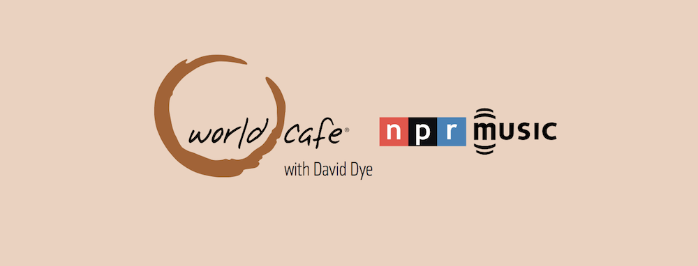

The low-down: I created original featured art for several NPR podcasts.
One of my final tasks as an intern at NPR was to unify featured artwork for different podcast providers. On these podcast's social media channels, most images were many years old, had low quality, or didn’t have art at all. This state was ill-suited if iTunes or NPR featured the podcast.
This project required as much, or more, coordination as it did designing. I corresponded with many of NPR’s producers to see if they had existing art, related images, or basic ideas about new art. A few had great art ready to go, but most needed new art made.
Since this was such a large project, I was unable to finish it by the time my internship ended. But, I did design art for four shows (Planet Money, From The Top, World Cafe, and Storycorps). The Design and Marketing teams approved them all. Additionally, seven other producers were able to get new art made for this purpose. Afterwards, the state of podcast art was in a much better place than I found it.
